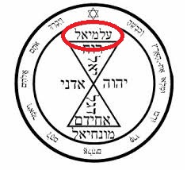

Приветствую всех людей, которые живут на нашей Земле!
Вы зашли на портал обновленной веры, которая объединяет все религии мира в единую.
Здесь не имеет значение цвет кожи, пол, возраст, религиозное отношение и все остальное. Имеет лишь значение
какой вы человек.
Принимая эту веру, вы можете продолжать служить Господу нашему так, как вы это умеете делать. Никто не будет
требовать от вас отказаться от вашей религии.
Здесь вас не будут просить ходить в храмы.
Здесь, вы должны сами учиться слушать его своим сердцем, душой и помыслами.
А храмом нашим является вся вселенная.
Здесь не будет посредников между тобой и Богом нашим!!! Будут лишь духовные учителя, которые будут учить
добру.
Здесь будет новый праздник, первый день нового года, как день, когда пришло откровение о создании новой
единой веры. Год 2024.
Этот праздник будет называться "День Откровения". Праздновать его следует три дня (с первого января по
третье
января).
Празднуйте его так, как заходите.
Здесь не будет никаких обязательных сборов к молитве.
Здесь не будет много заповедей, но будет лишь одна единственная заповедь, которую вы должны будете
соблюдать!!!
Здесь не прощаются грехи без покаяния, поскольку покаяться, означает понять свою ошибку и больше так не
делать никогда!!!
Что такое грех в нашей вере? Это все, что приносит вред тебе или окружающим.
Помните - Даже яд в меру бывает полезен для здоровья.
Здесь не обязательно молиться каждый день.
Здесь вам не понадобится носить религиозные символы.
Здесь вам просто нужно быть человеком. Человек от слова человечность.
Успех в нашей вере - это иметь свое место в жизни, которое уготовано нашим Творцом и служить цели данной Богом.
Эта вера называется Аламиал.
И заповедь каждого аламиалиста едина для всех в этом мире.
- Поступай с другими так, как бы ты хотел, чтобы поступали с тобой.
Здесь не будет никаких гор священных книг, которые нужно изучать, будут лишь сказки для воспитания детей и
взрослых.
Если вы готовы принять эту веру, тогда просто произнесите
–Аламиал – Бог наш!
Произнесли? Тогда просто соблюдайте единственную заповедь нашу и делайте добро. Будьте людьми и будьте
мудрыми!
Отныне, между тобой и Аламиалом, Богом нашим, нет посредников.
Теперь ты аламиалист.
Благослови вас и вашу семью Аламиал!!!
Как я нашел имя Бога?
Я православный, но учился в синагоге и принимал ислам (краткая
история того, как Господь водил меня своим путем). В итоге, я решил узнать, а что написано в ведах о религии.
Наткнулся на это видео -
https://www.youtube.com/watch?v=5dCjkoXie2Y
Там, человек рассказал то, что указало мне путь. Это нужно смотреть с 8-мой минуты видео.
Далее, я подумал – А что чаще всего произносят люди в молитвах трех религий?
Аллах, Аминь, Аллилуйя.
И тут я подумал – Бог любит троицу?
Алл, Ами, Алл.
Получилось – Алламиалл (9-ть букв).
Далее подумал – Число Бога 7-мь?
Убрал двойные буквы и получил – Аламиал (7-мь букв).
Затем я подумал, а что если перевести это на иврит и поискать, что есть.

Вот, что я нашел…

Затем перевел с иврита на русский…

Не сильно впечатляет? Верно?
Тут я взял более древний язык – идишь…

Далее гугл переводчик стал бесполезен с обратным переводом.
Я воспользовался -
https://www.reverso.net
И далее краски заиграли…

С идиша на арабский…

С арабского на русский…

Хотите верьте, хотите нет, но это истинное имя Бога, ведь оно может начинаться только с первой буквы
алфавита, поскольку он был первым.
Имя ему Аламиал!
Не бойтесь произносить имени его, просто отца дети не называют по имени, а зовут папа.
Но даже у пап и мам есть имя.
Личные советы из жизненного опыта:
- Выше воли Аламиала нет в этом мире ни у кого, слушайте его безукоризненно.
- Оставайтесь в душе ребенком. Для Аламиала все мы дети.
- Слушайтесь своих родителей, через них Аламиал указывает вам ваш путь.
- Слушайтесь тех, кто выше вас по статусу и тех, кто что-то дает вам (начальник, врач, учитель). Через них Аламиал указывает направление.
- Если вам дают что-то, а вы нет – вы должны слушаться. Если вы даете и вам дают взамен – вы равны между собой. Если вы даете что-то, а вам нет, то вас должны слушаться. Не слушайтесь тех, кто только отбирает.
- Заботьтесь о своих домашних питомцах, они для вас такие же питомцы, как и мы для Аламиала.
- Критикуя – предлагай. Возражая – объясняй.
- Не берите и не носите с собой «оберегов и магических символов». Аламиал сам решает, как вам жить. Он великий учитель жизни. И если урок усвоен, то он награждает, если нет – ставит двойку.
- Пользуйтесь всем, что приносит пользу. Всем без исключения.
- Никаких проклятий нет. Есть лишь уроки, которые дает нам наш Бог и его оценки.
- Голод – лучший показатель того, как нужно жить. Привычки – плохо, они перегружают сознание. Потребляйте все, чего вам действительно хочется, но лишь тогда, когда этого действительно хочется.
- Праведникам не дается тяжелой жизненной ноши. Если вам тяжело, значит вы что-то делаете не так или это просто не ваше.
В завершении хочу сказать. Сборник сказок для детей дается АБСОЛЮТНО БЕСПЛАТНО!!! Но если вы захотите
заработать на ней, то помните о заповеди нашей
- Поступай с другими так, как бы ты хотел, чтобы поступали с тобой. Поделитесь заработком с автором книги.
В будущем планируется создание официального сайта нашей общей веры.
Планируется перевод бесплатной книги на другие языки.
Вместе мы сможем построить заводы по производству искусственного мяса, чтоб больше не убивать животных.
Вместе мы построим мусороперерабатывающие заводы, чтоб отчистить природу.
Вместе мы освоим водородное топливо, чтоб всем всего хватало.
Вместе мы построим бесплатные крематории, потому что за смерть, как и за жизнь не нужно платить.
Если вы хотите пожертвовать автору книги денежные средства, или на развитие нашей веры.
Номер карты для пожертвований - 5168 7456 3747 1829
По вопросу религий обращайтесь к Господу нашему.
Делитесь нашей верой с другими. Пусть весь мир объединится в имени Бога нашего.
Общение с Аламиалом – не простая задача, но, когда ваша душа, помыслы и сердце едины во мнении, значит вы на
верном пути.
Благослови вас Аламиал за ваши труды.
Ссылка на скачивание книги -
Сказки мудрости